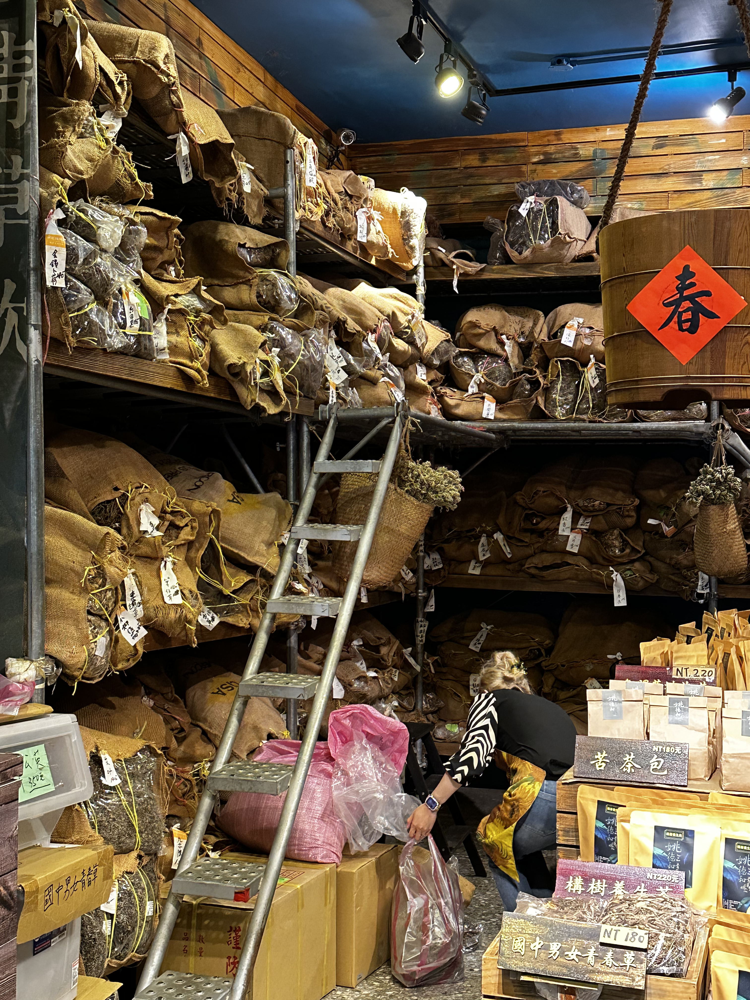
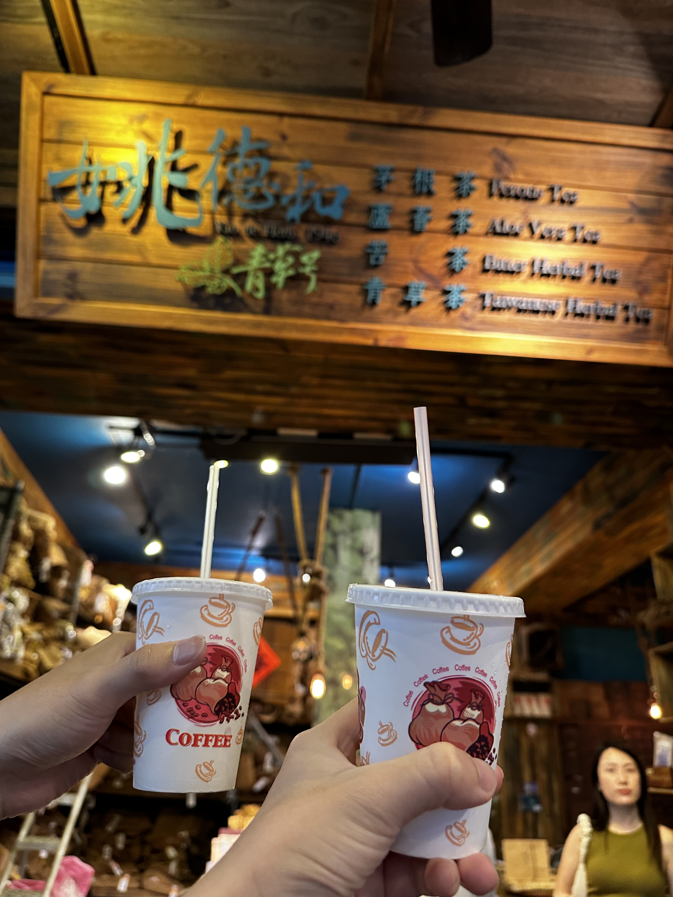
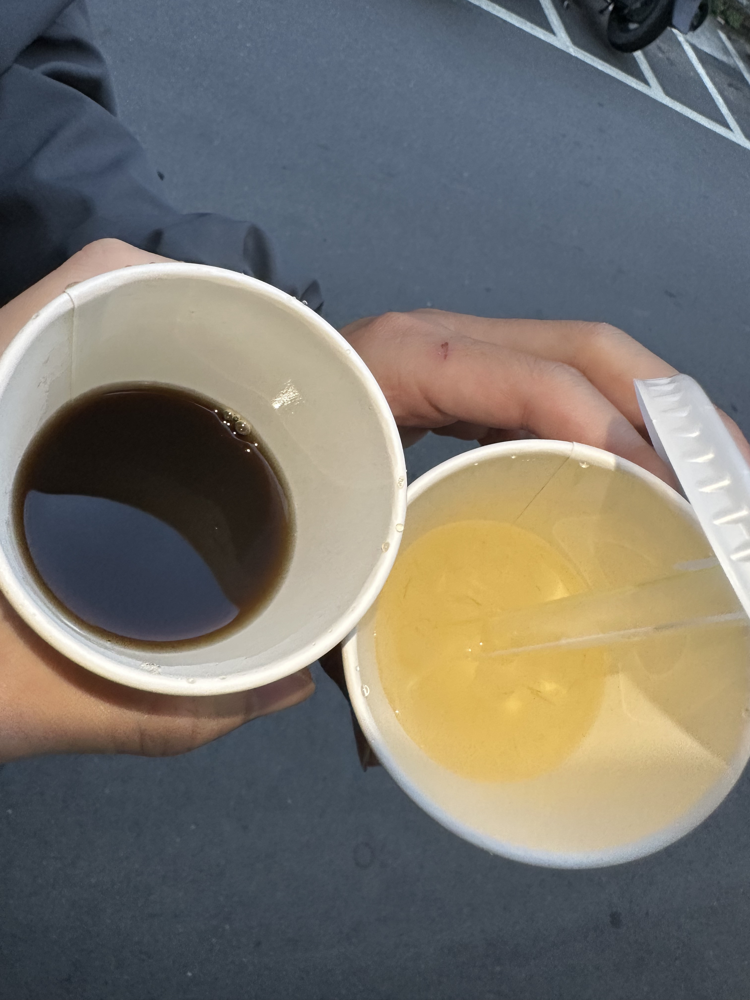

位於大稻埕民樂街的「姚德和青草號」，創立於1946年，至今已傳承三代，是當地相當具代表性的青草茶老店。雖然是老字號，但店面風格融合現代設計與復古元素，木質裝潢搭配簡約擺設，整體空間清爽舒適，讓人走進來不僅是為了解渴，更像是一場關於草本與時間的散步體驗。
店內不只是賣飲料而已，還可以看到員工拿著梯子上上下下拿藥材，這些藥材都用一個個大麻布袋包著，看起來超有歷史感，同時也可以看得出店家對於傳承藥草文化的堅持與職人精神。
 這次我點了招牌的青草茶與蜂蜜蘆薈茶。青草茶的味道比我想像中溫和，不會過苦，帶著淡淡的草香與微微薄荷的涼感，入口清爽、回甘舒服，其實一開始喝起來很像牙膏哈哈，很適合夏天當日常飲料。蜂蜜蘆薈茶則多了幾分甜潤感，蜂蜜的自然香氣融合清爽的茶底，再加上蘆薈本身的滑順口感，喝起來層次豐富且非常順口，是我這次最喜歡的品項。
「姚德和」不只是賣茶，而是傳遞一種對青草文化的堅持與轉化。從街邊小攤轉型為風格店面，他們保留了傳統配方，也讓青草茶變得更親民易入口。來到大稻埕，不妨放慢腳步，喝一口青草香，也喝進一點老台北的溫度。